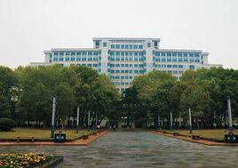

物理科学与技术学院
物理科学与技术学院源于1903文华大学物理系，弦歌百年，蜚英腾茂。建系早期，一批从国外回来的著名学者曾先后在这里任教和从事科学研究。毕业于美国普林斯顿大学的桂质廷博士，于1930-1939年担任华中大学教授、理学院院长兼物理系主任；毕业于美国布朗大学的卞彭博士，于1939-1958年先后任华中大学理学院院长、华中师范学院物理系主任。他们言传身教，筚路蓝缕30年，奠定了华中师范大学物理学科的基础。特别是改革开放以来，物理系得到了快速的发展。2002年经校内院系调整，成立物理科学与技术学院（简称物理学院）。2010年始，学校将物理学院做为“特区”加强建设，学院在科学研究和人才培养方面正阔步前进。
学院日常工作的开展主要由党政联席会、教授委员会、教职工代表大会三大部分组成，学院党政联席会议是学院重大事项议事决策的基本制度和主要形式，是学院职权范围内的的最高决策机构。学院党政联席会议下设六个工作委员会，即学术委员会（物理学科学术评议组）、发展委员会（教师聘任组）、本科教学工作委员会、研究生工作委员会、学生工作委员会、学位委员会。本科教学机构包含七个教研室，即普通物理教研室、理论物理教研室、物理实验教学中心、信息处理教研室、通信教研室、大学物理教研室、电信实验教学中心。学院的研究机构包括十一个研究所（研究院、中心），即粒子物理研究所、纳米科技研究所、光学科技研究所、原子与分子物理研究所、生物物理研究所、天体物理研究所、物理学科教学论研究所、光电信息技术研究所、电子技术研究所、通信技术研究所、教育信息化研究中心。“夸克与轻子物理”教育部重点实验室在学院立项建设。